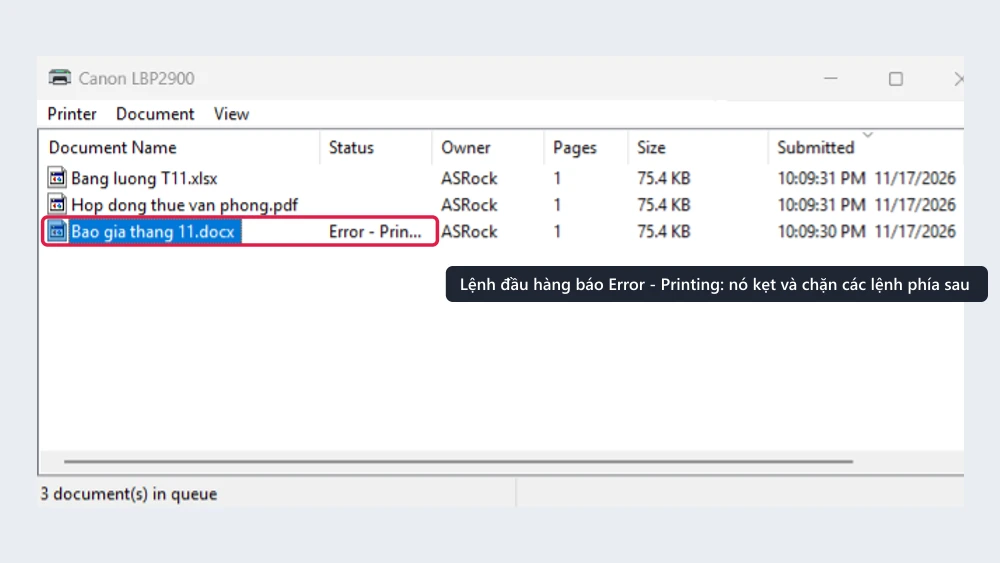
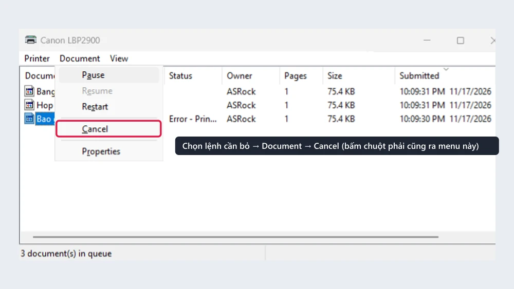
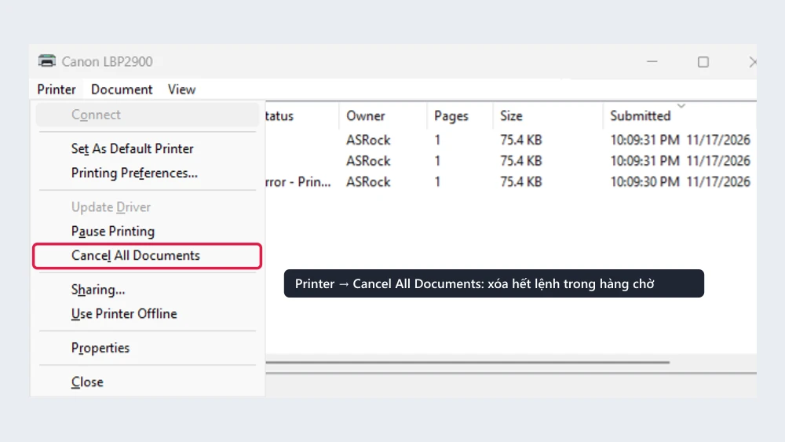
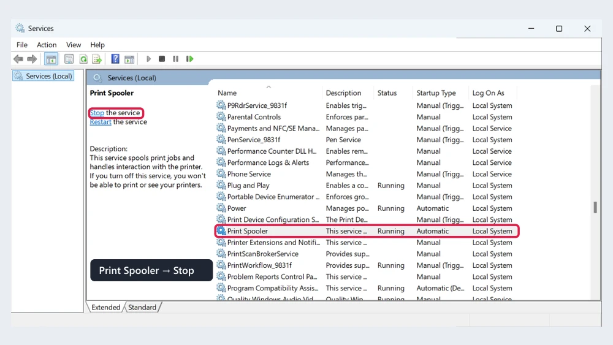
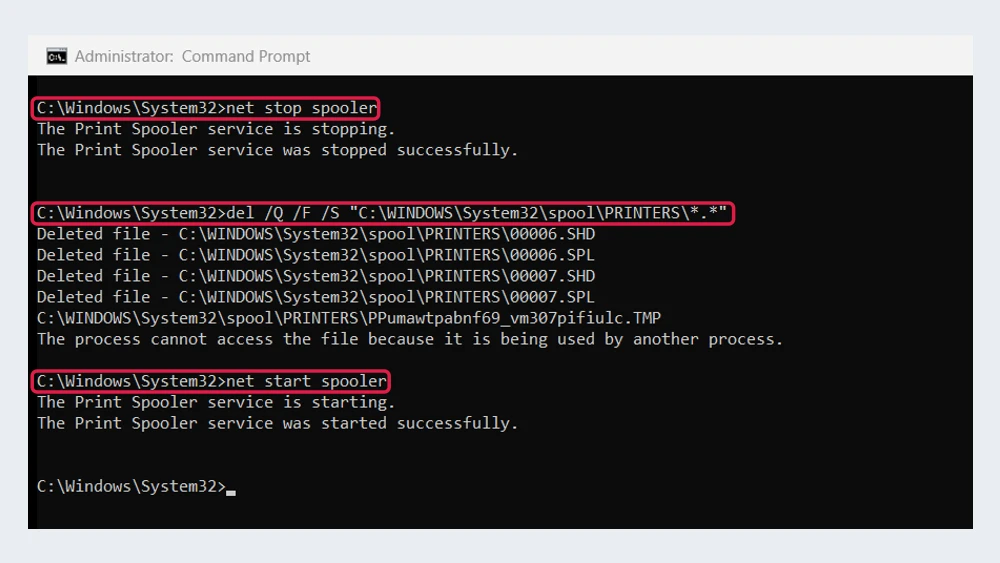

Cách hủy lệnh in, xóa lệnh máy in bị kẹt trên Windows
Bấm in nhầm file, in nhầm 50 bản thay vì 5, hoặc máy đứng im mà lệnh cứ nằm đó không chịu chạy — cả ba trường hợp đều xử lý ở cùng một chỗ: hàng chờ in (print queue) của Windows. Bài này đi từ cách nhẹ nhất tới cách mạnh nhất: hủy một lệnh in, xóa hết lệnh trong hàng chờ, rồi tới cách xóa lệnh in bị kẹt khi bấm hủy mãi không mất. Các bước giống nhau cho mọi máy in cắm vào máy tính Windows 10 và Windows 11, từ Canon LBP 2900, Brother, HP tới Epson.
Vì sao bấm hủy rồi mà lệnh in vẫn không mất
Khi bấm in, Windows không gửi thẳng file sang máy in mà đưa cho một dịch vụ tên Print Spooler. Dịch vụ này ghi lệnh in thành file tạm, xếp hàng, rồi chuyển dần sang máy in. Lệnh in bị kẹt thường do một trong ba chuyện: máy in đang tắt, hết giấy hoặc lỏng dây nên lệnh đầu hàng không đi được và chặn mọi lệnh phía sau; file in bị lỗi làm Print Spooler đứng; hoặc lệnh đã ở trạng thái Deleting nhưng Windows chờ máy in trả lời mãi không được. Trường hợp thứ ba là lúc bấm hủy bao nhiêu lần cũng vô ích, phải dừng hẳn Print Spooler rồi xóa file tạm bằng tay.

Chọn cách nào cho trường hợp của bạn
Hủy một lệnh in đang chờ
- Bấm in nhầm file, nhầm số bản hoặc nhầm máy in
- Muốn bỏ một lệnh nhưng giữ các lệnh khác đang xếp hàng
Xóa toàn bộ lệnh in trong hàng chờ
- Bấm in nhiều lần vì máy không chạy, giờ hàng chờ có cả chục lệnh giống nhau
- Vừa sửa xong máy (nạp giấy, cắm lại dây) và không muốn máy in ra hết chỗ lệnh cũ
Xóa lệnh in bị kẹt bằng cách dừng Print Spooler
- Lệnh in hiện chữ Deleting hơn một phút vẫn không mất
- Bấm Cancel hoặc Cancel All Documents mà danh sách không đổi
- Khởi động lại máy tính rồi lệnh cũ vẫn còn nằm đó
Xóa lệnh in bằng ba dòng lệnh
- Đã quen dùng cửa sổ lệnh và muốn làm nhanh
- Phải xóa lệnh in kẹt trên nhiều máy tính trong văn phòng
Lưu ý trước khi làm
- Hủy lệnh trên máy tính chỉ xóa phần chưa gửi sang máy in. Những trang máy in đã nhận vào bộ nhớ vẫn sẽ in ra. Muốn dừng ngay thì tắt nguồn máy in khoảng 10 giây, hoặc kéo khay giấy ra, rồi mới hủy lệnh.
- Máy in dùng chung qua mạng: lệnh nằm ở máy tính đã bấm in, hoặc ở máy tính đang chia sẻ máy in. Phải xóa ở đúng máy đó, xóa ở máy khác không có tác dụng.
- Cách dừng Print Spooler cần tài khoản có quyền quản trị (Administrator). Máy công ty bị khóa quyền thì nhờ người quản lý máy làm bước này.
- Dừng Print Spooler sẽ xóa toàn bộ lệnh đang chờ của mọi máy in trên máy tính đó. Lệnh nào còn cần thì in lại sau.
Hủy một lệnh in đang chờ — 4 bước
Dùng khi vừa bấm in nhầm và muốn bỏ đúng lệnh đó, giữ lại các lệnh khác.

-
Bước 1: Mở hàng chờ in
Khi đang có lệnh in, góc phải thanh tác vụ (cạnh đồng hồ) hiện biểu tượng máy in; bấm đúp vào đó là mở được hàng chờ. Không thấy biểu tượng thì vào Settings: Windows 11 chọn Bluetooth & devices → Printers & scanners, Windows 10 chọn Devices → Printers & scanners. Bấm vào tên máy in rồi bấm Open print queue (Windows 10 ghi là Open queue).
-
Bước 2: Chọn lệnh cần hủy
Cửa sổ hàng chờ liệt kê từng lệnh theo tên file, kèm trạng thái và số trang. Lệnh trên cùng là lệnh đang in hoặc đang kẹt.
-
Bước 3: Bấm Cancel
Bấm chuột phải vào lệnh rồi chọn Cancel, hoặc chọn lệnh rồi vào menu Document → Cancel. Windows hỏi lại thì chọn Yes. Trên Windows 11 bản mới, nút Cancel nằm trong dấu ba chấm ở cuối dòng của lệnh.
-
Bước 4: Chờ lệnh biến mất
Trạng thái đổi sang Deleting rồi lệnh mất khỏi danh sách sau vài giây. Nếu hơn một phút vẫn còn chữ Deleting thì lệnh đã kẹt, chuyển xuống cách dừng Print Spooler bên dưới.
Xóa toàn bộ lệnh in trong hàng chờ — 3 bước
Dùng khi hàng chờ dồn nhiều lệnh, thường do bấm in nhiều lần vì thấy máy không chạy.

-
Bước 1: Mở hàng chờ in
Làm như bước 1 ở trên: bấm đúp biểu tượng máy in cạnh đồng hồ, hoặc vào Settings → Printers & scanners → tên máy in → Open print queue.
-
Bước 2: Chọn Cancel All Documents
Ở cửa sổ kiểu cũ (Windows 10 và nhiều máy Windows 11), bấm menu Printer ở góc trên bên trái rồi chọn Cancel All Documents. Ở cửa sổ kiểu mới của Windows 11, bấm dấu ba chấm phía trên danh sách rồi chọn Cancel all.
-
Bước 3: Xác nhận và in thử lại
Chọn Yes khi được hỏi. Hàng chờ trống thì in thử lại một trang. Nếu lệnh mới lại nằm im, nguyên nhân là ở máy in (hết giấy, kẹt giấy, lỏng dây, máy đang ở chế độ Offline), không phải ở hàng chờ.
Xóa lệnh in bị kẹt bằng cách dừng Print Spooler — 5 bước
Dùng khi lệnh in hiện Deleting mãi không mất, hoặc bấm Cancel không có phản ứng gì. Đây là cách xử lý dứt điểm, cần quyền quản trị.

-
Bước 1: Mở cửa sổ Services
Nhấn tổ hợp phím Windows + R, gõ services.msc rồi nhấn Enter.
-
Bước 2: Dừng dịch vụ Print Spooler
Kéo xuống tìm dòng Print Spooler, bấm chuột phải và chọn Stop. Giữ nguyên cửa sổ Services, chưa đóng.
-
Bước 3: Xóa file lệnh in tạm
Mở File Explorer, dán đường dẫn C:\Windows\System32\spool\PRINTERS vào thanh địa chỉ rồi nhấn Enter. Windows hỏi quyền thì bấm Continue. Chọn hết các file trong thư mục (Ctrl + A) và xóa. Chỉ xóa file bên trong, không xóa thư mục PRINTERS.
-
Bước 4: Bật lại Print Spooler
Quay lại cửa sổ Services, bấm chuột phải vào Print Spooler và chọn Start.
-
Bước 5: Tắt bật máy in rồi in thử
Tắt nguồn máy in khoảng 10 giây rồi bật lại để xóa phần dữ liệu còn nằm trong bộ nhớ máy. Mở lại hàng chờ, danh sách phải trống. In thử một trang.
Các file trong thư mục PRINTERS (đuôi .SHD và .SPL) chỉ là lệnh in tạm. Xóa chúng không ảnh hưởng tới driver hay cài đặt máy in.
Xóa lệnh in bằng ba dòng lệnh — 3 bước
Cùng kết quả với cách dừng Print Spooler ở trên nhưng nhanh hơn, hợp với người quen gõ lệnh hoặc phải xử lý nhiều máy.

-
Bước 1: Mở Command Prompt bằng quyền quản trị
Bấm nút Start, gõ cmd, bấm chuột phải vào Command Prompt và chọn Run as administrator.
-
Bước 2: Gõ lần lượt ba lệnh
Gõ từng dòng, nhấn Enter sau mỗi dòng:
net stop spoolerdel /Q /F /S "%systemroot%\System32\spool\PRINTERS\*.*"net start spooler -
Bước 3: Kiểm tra lại hàng chờ
Dòng cuối báo The Print Spooler service was started successfully là xong. Mở hàng chờ in kiểm tra danh sách đã trống rồi in thử.
Hủy lệnh in ngay trên máy in
Một số máy in hủy được lệnh đang chạy bằng nút bấm trên thân máy, đỡ phải mở máy tính.
| Máy in | Cách hủy trên máy | Hướng dẫn |
|---|---|---|
| Canon LBP 2900 | Máy không có nút hủy trên thân. Hủy trong hàng chờ in của Windows, hoặc trong cửa sổ trạng thái Canon hiện lên khi đang in: menu Job → Cancel Job. | Máy in không in được |
| Brother không màn hình (HL-L2321D và máy cùng dòng) | Nhấn giữ nút Go khoảng 2 giây để hủy lệnh đang in. | Reset Brother HL-L2321D |
| Máy có màn hình LCD (Brother, HP, Canon đa năng) | Nhấn nút Cancel hoặc Stop (thường có dấu X) trên bảng điều khiển. | Sửa máy in tận nơi |
Câu hỏi thường gặp
Hủy lệnh in rồi mà máy vẫn in tiếp thì làm sao ?
Phần máy đang in là dữ liệu đã nằm trong bộ nhớ của máy in, hủy trên máy tính không rút lại được. Tắt nguồn máy in khoảng 10 giây (hoặc kéo khay giấy ra), xóa hết lệnh trong hàng chờ rồi mới bật máy lại.
Xóa lệnh in máy Canon 2900 có khác máy khác không ?
Không khác. Canon LBP 2900 không có nút hủy trên thân máy nên mọi thao tác làm trên máy tính: mở hàng chờ in rồi Cancel, hoặc dùng menu Job → Cancel Job trong cửa sổ trạng thái Canon. Lệnh kẹt cứng thì dừng Print Spooler như hướng dẫn ở trên.
Lệnh in hiện chữ Deleting mãi không mất là bị gì ?
Windows đã nhận yêu cầu xóa nhưng đang chờ máy in phản hồi, thường do máy in tắt, mất kết nối hoặc Print Spooler bị treo. Khởi động lại máy tính có khi hết, có khi không. Cách chắc chắn là dừng Print Spooler, xóa file trong thư mục PRINTERS rồi bật lại.
Xóa file trong thư mục PRINTERS có làm mất driver máy in không ?
Không. Thư mục đó chỉ chứa lệnh in tạm đang chờ. Driver và cài đặt máy in nằm ở chỗ khác. Chỉ cần nhớ dừng Print Spooler trước khi xóa, nếu không Windows sẽ báo file đang được dùng.
Hủy lệnh xong, máy in ra cả xấp giấy toàn ký tự lạ ?
Đó là phần dữ liệu dở dang còn sót trong bộ nhớ máy in. Tắt máy in, rút dây USB, xóa sạch hàng chờ trên máy tính, chờ 10 giây rồi cắm dây và bật lại.
Xóa sạch hàng chờ rồi mà in lệnh mới vẫn kẹt ?
Lúc này lỗi không còn nằm ở lệnh in. Kiểm tra máy in có đang bật, có giấy, dây USB cắm chặt, và trong cửa sổ hàng chờ menu Printer không bị tích ở dòng Use Printer Offline hay Pause Printing. Vẫn không được thì gọi 0934 393 550 để kỹ thuật tới kiểm tra.